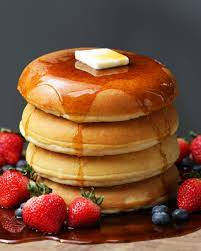

Rice and Sausage

Ingredients
- 4c flour
- 4 Tbsp baking powder
- 4c warm milk
- 3/4 cup melted butter
- 3 egg yolks
- 4 egg whites
Steps
- Whisk dry ingredients together leaving a well / hole in the center.
- Add melted butter, warm milk and egg yolks to the well and stir to combine.
- Once wet ingredients are mixed, incorporate into the dry ingredients.
- In a separate bowl, whisk egg whites to achieve soft peaks
- Add the beaten egg whites to the batter and gently fold to combine.
- Heat a skillet over low heat. Cook 1.5 cups batter at a time covered, roughly 20 minutes each, until brown on the bottom
- Top with syrup of your choice or other garnish if desired. Enjoy!
- Enjoy